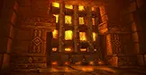

High above the Molten Core, Nefarian's laboratory opens. Blackwing Lair beckons the strongest raiders on your realm — a gauntlet of dragonkin, chromatic experiments, and the prince of the Black Dragonflight himself.
Razorgore, Vaelastrasz, Broodlord Lashlayer, and the chromatic council test every role in your raid. Nefarian's throne room is the final exam — mechanics that punish inattentive players and rewards for those who execute.

Gather your raid, sharpen your consumables, and claim the treasures of the Black Dragonflight.
The experiments are over. The real test begins now.